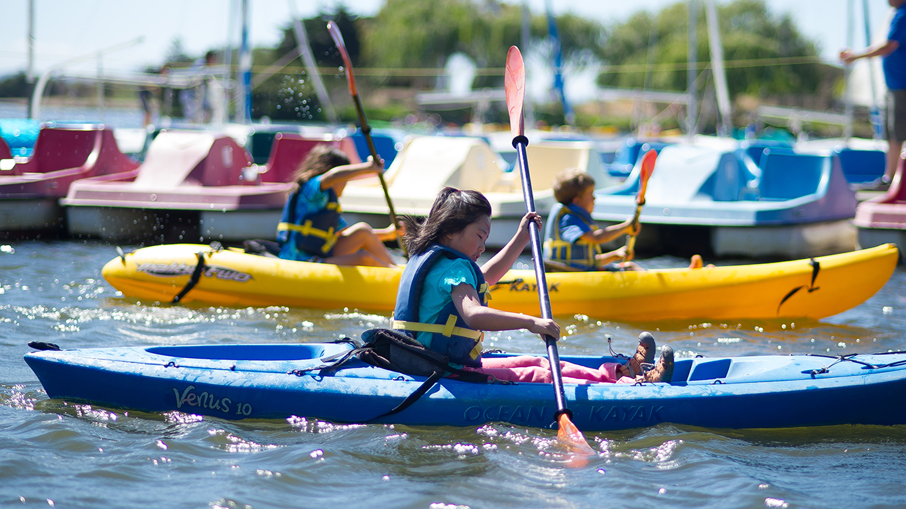

-
 80°
80°
-
 12KT
12KT

camp shoreline
Camp Shoreline
Camp Shoreline allows 5-11 year-olds to flex their innate curiosity, as well as take part in outdoor activities, that aid their discovery and enjoyment of the science underpinning the nature preserve, within the heart of Silicon Valley, that is Shoreline Lake.
Camp Shoreline’s STEAM (Science, Technology, Engineering, Arts & Mathematics) based curriculum, combined with a range of watersports and other outdoor activities that build scientific, as well as creative, aptitude and skills, provides a weekly curriculum diverse enough to engage the mind of even the most energetic child
Education & Fun in Nature
Designed to meet State of California STEM Education standards, and implemented by experienced, credentialed educators, campers learn about the practical applications of physics-oriented principles, the scientific method, collecting observations, evaluation of data, and more, all while enjoying a variety of fun activities, in and out of the water, that also include creative/art-related crafts and projects.
In addition to being fun, local and safe, as well as educational, kids also get the chance to burn off all that summer energy and keep their minds engaged with watersports – without the risk of the actual Bay. The variety of land activities, next to the water’s edge of this serene, 50-acre Lake, combined with a range of watersport options, makes Camp Shoreline a must for kids with a technical bent, as well as those who want to enjoy all aspects of nature.
Under the supervision of skilled camp counselors (many of whom are credentialed teachers, and have hefty experience with a variety of watersports), campers can take advantage of nature walks and other fun elementary age-appropriate learning activities – to turn the Lake and surrounding Baylands area into their own personal field-study laboratory.
A Full Week of Engaging Activities
Regardless of activity, Shoreline’s experienced, multi-talented, and enthusiastic, camp counselors have no trouble getting young campers to explore their active, creative, and technical sides. While day-to-day programming may change based on weather-related camp activities, campers can, typically, expect the following daily schedule during their week of this classic day camp experience:
- Mornings spent on science-based observation and STEAM activities, in concert with physically engaging recreation that helps boost children's natural interest in acquiring knowledge. To that end this "outdoor schooling" also encompasses learning to kayak, canoe, row or cycle the pedalboats, plus taking a sailboat ride, individually or with siblings.
- Afternoons playing games, participating in artistic/craft/educational activities, hiking in the natural surroundings, learning about Shoreline Park (its history, how it was built, et al.), birdwatching in its wildlife sanctuary, or even dropping by historic sites in the near vicinity for a visit.
By using their senses (smelling, listening, seeing, tasting and feeling), and engaging in science-related, creative and physical activities that rely on water (the planet’s most important resource), campers learn how math applies to the real world: E.g., how to check the salinity vs. fresh water content in the sloughs using ratios, calculating density by designing a lava lamp, understanding the connection between tides and centrifugal force, how sail angle influences sailboat course due to wind direction, designing kites that can fly based on calculated wind speeds over specific bodies of water, etc.
Need More Challenge?
And, finally, for those campers, minimum 9 years of age, interested in a dedicated windsurf/sail program, Shoreline also offers Windsurfing/Sailing Level I (Beginner) and Level II (Intermediate) camps during the summer as well.
Extras Included: A lunch catered by the American Bistro is included with Camp Shoreline registration. Lunch selections vary by day and include a vegetarian option each day. Also, materials for each camper are also included with the camp registration price.
To Keep in Mind: Campers should be comfortable swimming and treading water, be able to submerge their heads under water, behave prudently if a capsize occurs, and be in adequate physical shape to engage in the Camp’s activities. If in doubt, please contact your doctor. In addition Campers and/or parents must notify a staff member regarding any medical condition of which the instructor should be made aware. Although you may provide your own, Shoreline does provide PFDs (life vests) and wetsuits.
What to Bring
Every day Campers should bring a towel, bathing suit and two sets of dry, comfortable clothes (They will get WET – in the morning and again in the afternoon.). In addition, they should also bring a jacket or fleece, lots of sun protection, a reusable water bottle, and shoes or booties to wear while on the boats and in the water. No flip-flops allowed. Campers should have a pair of water shoes/aqua socks to wear while boating, and a pair of athletic shoes to wear before and after boating. Campers may also wear athletic shoes for boating, but keep in mind they will get wet and they should have a second pair of shoes to change into.
Hats and sunglasses are recommended but not required. If wearing glasses, Campers should bring a lanyard to secure glasses around their head. It is also a good idea to send along some additional money or a snack with your Camper to carry him/her throughout the day, as well as for locker tokens – cost $2 and are recommended for securing valuables.
Important: On the first day of camp, please arrive 15-20 minutes before the start time to register and sign-in
Please Note: Also, parents, no pets, including dogs, may enter the park, even if they are inside a vehicle when dropping off and picking up campers.